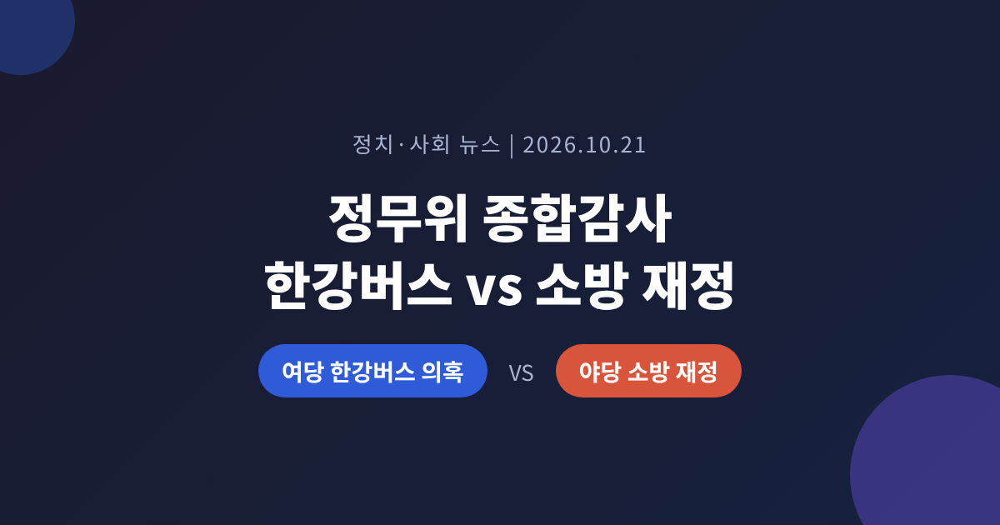
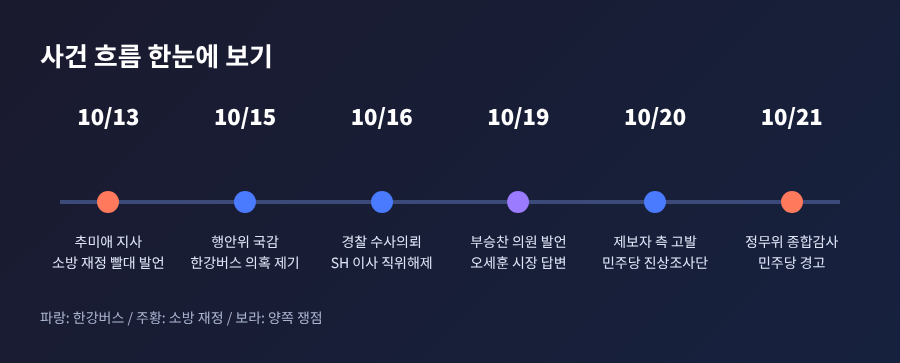
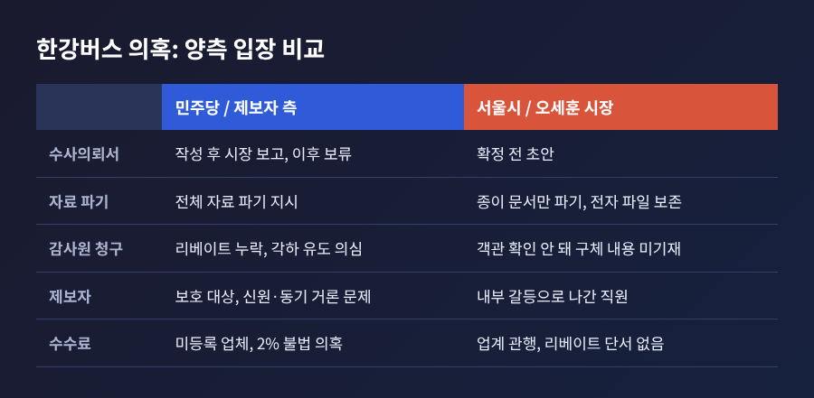
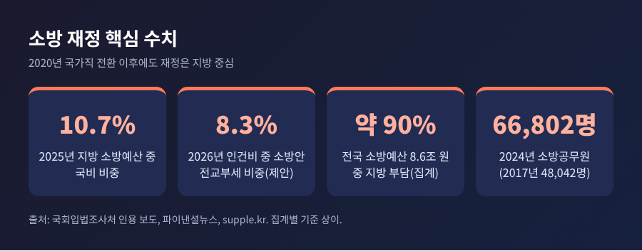
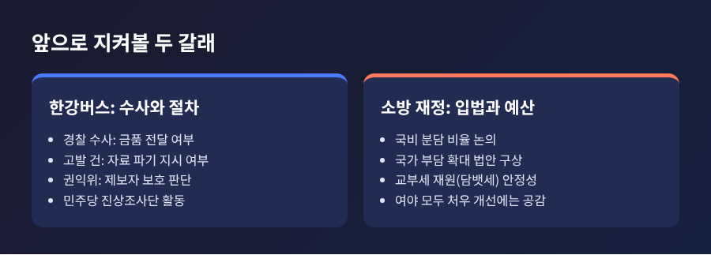

정무위 종합감사 한강버스 의혹과 소방 재정, 여야가 서로 겨눈 쟁점 정리

2026년 10월 21일 국회 정무위원회 종합감사에서 여당은 한강버스 의혹을, 야당은 소방 재정 문제를 꺼내 들었습니다.
이번 글에서는 두 쟁점의 사실관계와 양측 주장, 재정 구조, 앞으로의 전망을 정리해 보겠습니다.
의혹은 모두 확인 중인 주장이라는 점을 먼저 밝혀 둡니다.
세 줄로 요약하면 이렇습니다.
- 더불어민주당은 서울시 한강버스 리베이트 의혹과 조사 무마 논란을 국민권익위원회에 따졌습니다.
- 국민의힘은 추미애 경기도지사 등 여권의 '소방 재정 빨대' 발언을 문제 삼았고, 임기근 국무조정실장은 "적절치 않다"고 답했습니다.
- 두 사안 모두 사실 확정 단계가 아니며, 수사와 입법 논의가 이어질 전망입니다.
무슨 일이 있었나
이날 정무위는 국무조정실, 국가보훈부, 공정거래위원회, 국민권익위원회, 개인정보보호위원회를 대상으로 비금융 부문 종합감사를 열었습니다.
정무위 소관 기관이 아닌 서울시와 경기도 사안이 올라온 점이 눈에 띕니다.
앞선 상임위 국감에서 불거진 문제를 여야가 정무위로 가져와 다시 맞붙은 셈입니다.
여당인 민주당 한민수·박민규 의원은 한강버스 건을 국민권익위원장에게 물었습니다.
야당인 국민의힘 김재섭 의원은 소방 재정 건을 임기근 국무조정실장에게 물었습니다.
같은 날 답변석에는 증인보다 기관장과 정부 고위직이 앉았습니다. 별도 증인 명단은 보도에서 확인되지 않았습니다.

여당의 쟁점, 한강버스 의혹
의혹의 뼈대는 이렇습니다.
한강버스 선체를 만든 가덕중공업이 중개수수료 약 3억 2천만 원을 지급했고, 이 가운데 일부가 브로커를 거쳐 서울주택도시개발공사(SH) 간부에게 흘러갔을 가능성이 10월 15일 행정안전위 국감에서 제기됐습니다.
수수료율은 2%였습니다. 오세훈 시장은 중소 선박의 통상 수수료가 0.5~1% 안팎이라 2%는 높은 편이라고 인정했습니다.
더 큰 논점은 그 뒤의 처리 과정입니다.
내부 제보자는 2025년 9월 감사위원장이 시장에게 대면 보고했고, 수사의뢰서가 작성됐으나 보류됐으며, 9월 30일 관련 자료를 파기하라는 말을 전해 들었다고 주장합니다.
서울시는 2025년 10월 2일 감사원에 공익감사를 청구했지만 각하됐습니다. 감사원은 청구서에 리베이트 언급이 없었다고 밝혔습니다.
민주당은 이 지점을 파고들었습니다.
한민수 의원은 청구서에서 금전 제공 진술이 빠진 경위를 따졌고, 지시자가 있다면 책임져야 하며 요건에 해당하면 권익위 명의로 고발해야 한다고 촉구했습니다.
박민규 의원은 오 시장이 10월 19일 국감에서 제보자의 인사 문제와 직원 간 갈등을 거론한 것이 신고자 신원 노출과 동기 흠집 내기로 부패방지법 위반 소지가 있다고 주장했습니다.
서울시와 오 시장의 입장은 다릅니다.
- 파기한 것은 종이 문서뿐이고, 전자 파일은 비밀번호를 걸어 보존하고 있다고 설명합니다.
- 수사의뢰서는 확정된 문서가 아니라 초안이었다는 입장입니다.
- 제보자 진술과 통화 녹음만으로는 금품 전달이 객관적으로 확인되지 않아 청구서에 구체 내용을 쓰지 않았다고 밝혔습니다.
- 7월 23일부터 10월 14일까지 자료 요구 3회, 방문 조사 1회, 면담 4회, 전화 확인 등 총 23차례 조사를 했다고 말합니다.
- 권익위로부터 공익제보자 지위에 대한 공식 통보를 받은 적이 없고, 국감 발언이 보호 원칙에 어긋난다고 보기 어렵다는 입장문도 냈습니다.
서울시는 국감 다음 날인 10월 16일 서울경찰청에 수사를 의뢰했고, 관련 SH 이사는 직위 해제됐습니다.
10월 20일에는 제보자 측이 직권남용과 증거은닉 혐의로 고발장을 냈습니다. 같은 날 민주당은 진상조사단 구성과 당 차원의 고발 검토를 밝혔습니다.

야당의 쟁점, 소방 재정 발언
발단은 10월 13일입니다.
추미애 경기도지사가 국회 국감에서 소방을 "가장 큰, 골치 아픈 재정 빨대 같다"고 말했습니다. 경기도의 소방 인건비와 사업비 부담을 설명하던 자리였습니다.
10월 19일에는 민주당 부승찬 의원이 추 지사를 옹호하며 "소방이 재정을 쭉쭉 빨아먹고 있는 것 아니냐"고 말해 논란이 커졌습니다.
민주당은 10월 21일 최고위원회에서 추 지사와 부 의원 모두에게 경고 조치를 하기로 했습니다.
부 의원에게 내려졌던 윤리감찰 지시는 경고로 정리됐고, 형평성 문제를 고려해 추 지사에게도 같은 수위를 적용했습니다. 당은 소방관과 국민께 거듭 사과했습니다.
김재섭 의원의 논리는 분명합니다.
소방공무원을 국가직으로 전환했다면 국가가 그에 걸맞은 처우를 책임져야 하고, 지방재정 의존을 '빨대'라 부르는 것은 부적절하다는 것입니다.
소방 인건비를 전액 국비로 돌리면 약 6조 원이 필요하다고 짚었고, 대통령이 민생회복쿠폰에 약 14조 원을 쓰고 있다고 대비시켰습니다. 두 수치는 김 의원의 주장입니다.
임기근 실장의 답은 신중했습니다.
발언에 "과한 측면이 있다"고 했고, 국비와 지방비가 함께 투입되는 만큼 비율을 어떻게 조정할지 고민 중이라고 했습니다. 중앙과 지방이 함께 처우와 장비 확충에 나서야 한다는 데는 동의했지만, 구체 방안은 이 자리에서 밝히지 않았습니다.
소방 재정은 어떤 구조인가
소방공무원은 2020년 4월 국가직으로 전환됐습니다.
그러나 소방은 여전히 지방자치사무로 분류되고, 소방본부는 시도지사 소속입니다. 자치사무 비용은 지방이 부담하는 것이 원칙이어서, 신분과 재원이 어긋난 구조가 됐습니다.
숫자로 보면 간극이 드러납니다.
- 소방공무원은 2017년 4만 8,042명에서 2024년 6만 6,802명으로 늘었습니다.
- 지방 소방 예산은 2019년 약 5.5조 원에서 2025년 약 8.1조 원으로 늘었습니다.
- 2025년 국비 비중은 10.7%, 국가직 인건비 중 국비는 8.6%입니다.
- 2026년 소방 인건비 제안액 6조 5,550억 원 중 소방안전교부세는 5,496억 원, 8.3%입니다.
- 전국 소방 예산 8조 5,967억 원의 약 90%를 지방이 부담한다는 집계도 있습니다.
교부세 재원은 담배 개별소비세입니다. 담배 판매가 줄면 재원도 줄 수 있다는 지적이 따릅니다.
집계마다 국비 비중의 기준 연도와 값이 다르다는 점은 유의하셔야 합니다.

국감 막바지, 정치 지형은
이날 공방은 서로 다른 약점을 겨냥한 맞불에 가까웠습니다.
여당은 야권 단체장이 이끄는 서울시를, 야당은 여권 인사들의 발언을 문제 삼았습니다.
다만 소방 건은 여당이 이미 경고와 사과로 수습에 나선 반면, 한강버스 건은 서울시가 반박을 이어 가고 있어 온도 차가 있습니다.
정무위에서는 수사기관장의 국무회의 배석도 쟁점이었습니다.
전날 중대범죄수사청장, 경찰청장, 공소청장이 배석한 것을 두고 국민의힘은 수사 독립성을 우려했고, 임 실장은 모든 외청이 협업 목적으로 참석한다고 답했습니다.
종합감사는 22일 재정경제기획위, 22~23일 과방위·산자위·농해수위, 23일 국토위·문체위로 이어집니다.
앞으로의 전망
한강버스 건의 향방은 수사가 쥐고 있습니다.
경찰 수사의뢰와 제보자 측 고발이 병행되는 만큼, 금품 전달 여부와 자료 파기 지시 여부가 별개로 가려질 것입니다.
권익위는 보호 신청이 접수되면 조사해 조치하겠다고 밝혔으므로, 제보자 지위와 시장 발언의 적법성도 절차를 따라 판단될 전망입니다.
소방 재정은 입법으로 옮겨 갈 가능성이 큽니다.
여야 모두 처우 개선에는 공감하지만, 국비 비율과 재원을 어떻게 마련할지는 아직 정해지지 않았습니다.
소방 인건비의 국가 부담 비율을 높이는 법안 구상이 여야에서 나오고 있어, 구체적인 분담 비율이 다음 논점이 될 것입니다.

정리하면 이렇습니다.
한강버스는 사실 확인의 문제이고, 소방은 재정 분담의 문제입니다.
국감의 공방이 끝난 뒤에도 남는 것은 수사 결과와 예산 숫자일 것입니다.